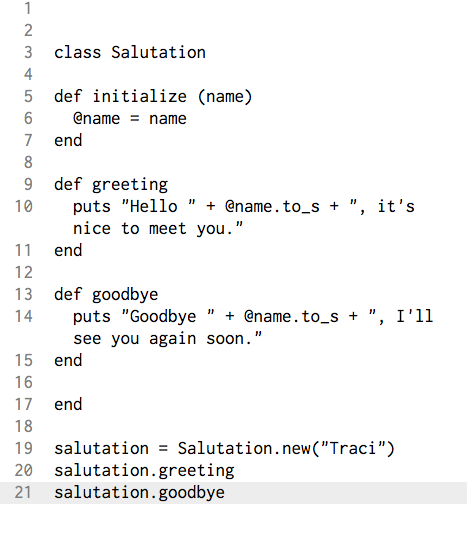

Ruby Classes
How and when to use them
Sunday, March 20 2016
Ruby classes are an expcially useful tool in programming. They allow you to call and make your own methods that can communicate with eachother. Classes can also be ran on various objects in various instances. All in all, it is a great way to organize your methods and variables pertaining to a certain goal that you are trying to reach. With that being said, learning how to make a simple class will be the goal of today's post.
You can recognzie a class quite easily, it will start with the word class and then it's name. The following example is of a very simple class that will puts a different string, depending on what method you call to it.
Lines 19-20 tell Ruby what class you want to run and the input you are decinding to enter in it. The code on line 19, tells the program that this is a new instance of this class, and in this case, it will take the string, "Traci", as it's input all while calling this new instance "salutation". The code on line 20-21 each specify the method that I want to but called onto the input on line 19. See how it is denoted by a period and then the method name? Just like a built in method, except this time you have told it what the method will do! Each will output something different since each are calling different methods within the class. Even with such a simple example, it is clear that classes can have endless practical applications in programming.